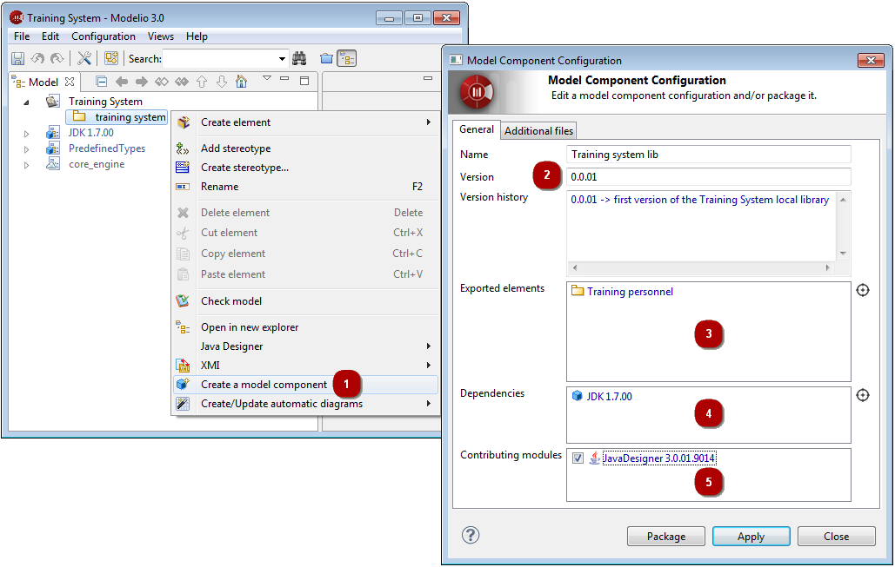

The development of a model component is the first phase in the model component life cycle, during which a model component is prepared by a developer for packaging.
Model component development includes the following operations:
the UML model must first be built (including any specific code generation annotations you wish to include)
the model component must then be created and defined. This includes the creation of the future model component itself (name, description, version number), as well as the definition of its contents (model parts and external files) and its dependencies on other model components.
This section presents how to create and define a model component.
The first step in the development of a model component is its creation inside a UML model.
To create a model component, follow the steps shown below.

Model elements to be included in a model component are referenced using manifestation links. These elements will be available for use in projects where the model component is deployed. Only high-level packages (packages located under the project root) can be referenced by a model component through a manifestation link. However, all the elements they contain will also be packaged in the model component.
If your model component is dependent on another model component, this fact must be modeled through a use link.
External files can also be included in a model component. This is useful when you want your model component to install specific files like libraries, jar files or resource files when it’s deployed.
For example, let’s imagine that you have reversed the Java JDK, in order to produce a reusable component. This type of model component, when deployed, should allow Java application development including compilation, meaning that JDK jar files would then have to be deployed by the model component.
When defining external files to be included in a model component, the $(GenRoot) variable should be used. This variable is the root directory for generation, and can be defined by each user at Modelio parameter level, which means that the external files included in the model component will be deployed correctly in each user’s own individual environment.
Once you are satisfied that you have carried out all these steps correctly, click on “Apply” to confirm your changes and close the model component edition window.
You can proceed with the packaging of your model component by clicking on ‘Package’.